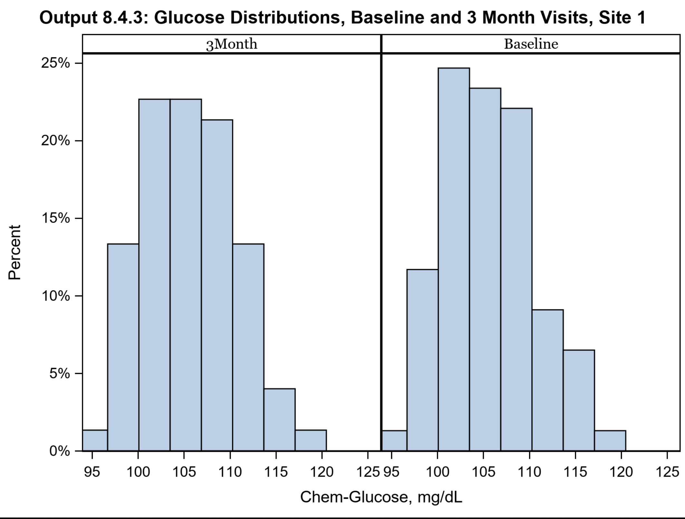

Clinical trial case study in SAS Viya:
In this project, we cleaned and merged data from various file formats such as .txt, SAS datasets,
Excel files, and .dat files using DATA step. In the PROC step, we validate the data and generated
output with various plots and table to create visual representations using ODS (Output Delivery System)
files such as PDF, RTF, PowerPoint, and PNG. We also used SAS macro variables in SAS Viya, which allowed
for dynamic modification of the SAS program through symbolic substitution. The main objective of this project
included data handling tasks such as cleansing, importing, validating, exporting, manipulating, subsetting,
grouping, merging, and appending datasets. Additionally, we focused on generating basic summary reports,
as well as debugging code.

Heart Failure Data Analysis Using R:
The heart failure dataset was analyzed using R, applying various data visualization techniques with
the help of R libraries such as ggplot2, rpart, randomForest, and dplyr. The analysis aimed to
identify the best predictive model using regression techniques, including multiple logistic
regression. We used statistical tools such as the logistic function, correlation matrix,
and different model-building methods, including forward selection, backward elimination,
stepwise selection, and criteria such as the Akaike Information Criterion (AIC) and Bayesian
Information Criterion (BIC), to evaluate and optimize the model performance.
Data Visualization in Python using diffrent Python librarys such as pandas, numpy, matplotlib, and seaborn. Data cleansing, analysis,
and manage the dataset to using diffrent statistical analytical technique.
{kind=link}